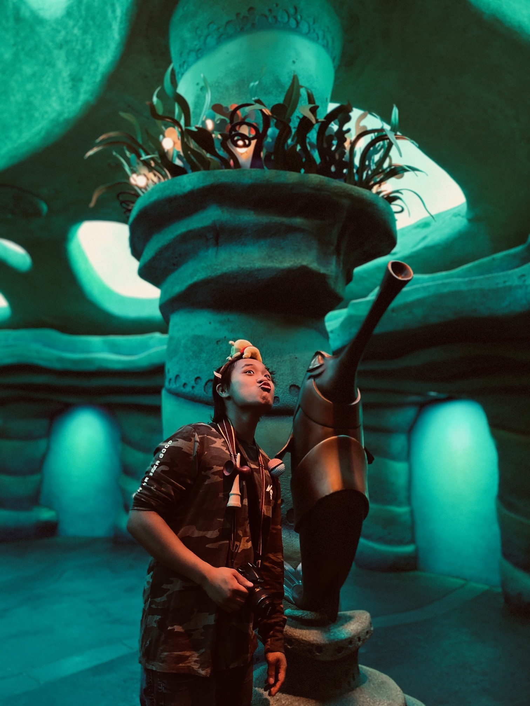
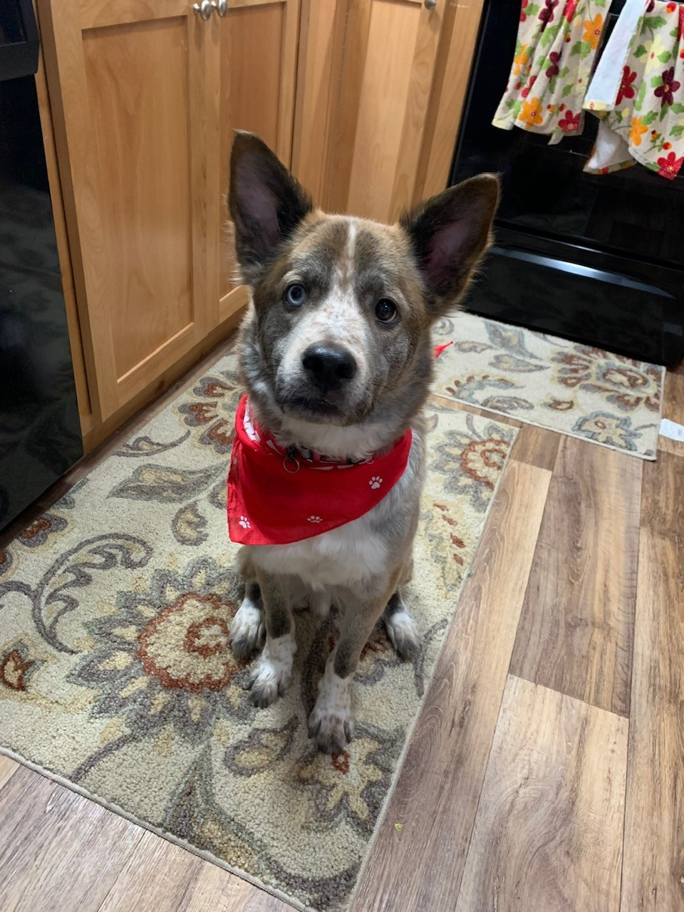
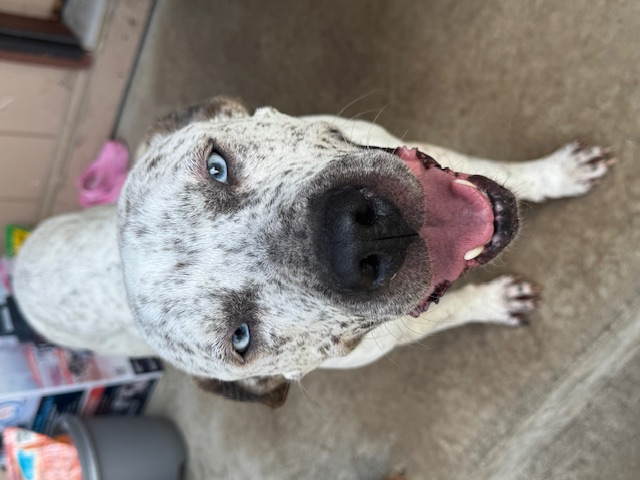

Who is This Mysterious Man?

Hello and welcome to my webpage!
My name is Cj Sison and this webpage is about myself.
I am 26 years old, I live in Bremerton and graduated from Central Kitsap High School.
My first job was at the McDonald's in Silverdale.
I have been working at Mcdonald's for 10 years and was a General Manager for the last 4 years.
Some of you may know me or know of me as I used to run the McDonald's in Silverdale.
Currently I am going to Olympic College to further my
education,
getting my Associates degree in Software Development. Growing up I loved messing with technology and
hope that one day I will take part in developing a video game.
Hobbies and Interests
My Dogs
My Mindset
My mindset is focused on constant improvement and learning through a variety of hobbies. I enjoy exploring different skills and interest because it challenges me to think in new ways and expand what I am capable of. I am the type who can never sit still. I am always looking for something new to do or learn. I believe that having hobbies gives an opportunity to grow, not just in skill but in character and perspective.
Hobbies and Interest
My Hobbies:
- Ping Pong
- Crocheting
- Herptoculture
- Strength training
- Playing video games
Interests:
- Streaming
- Travelling
- Pokemon VGC
Ping Pong
I've been playing ping pong since I was in high school. After school, my brother and I would go to the Silverdale YMCA to study and hangout with friends. Back in the day, the YMCA had a ping pong table in the teen center but, it was rarely ever used. So my friends and I decided to give the sport a try to pass time. Read more
Animal Educator
Currently, I have 17 crested geckos, nine tarantulas, two dogs, a bearded dragon, and a leachianus gecko. I come off as one of those hobbyist, but I do it for more than just "collecting." I am very passionate about edcuating others about the joy of keeping and caring for exotic animals. Read More
My Dogs
Benji
This is Benji, he is 7 years old and has two different colored eyes. One eye is brown and the other is blue. He is a mix of four dog breeds: German Shepherd, Australian Shepherd, Jack Russel Terrier, and Chow Chow. He is super obedient and loves belly scratches.
Bubbles
This is Bubbles, he is 6 years old and is a mix of two dog breeds: Blue Heeler and Pit Bull. Although a lot of people have their opinions of Pit Bulls, he is super loving and super motivated by treats. Infact, he needs a slow feeding bowl because he tends to swallow his food in big chucks as he eats.